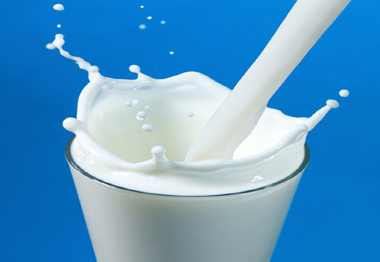

 দুধের উপকারীতা
দুধের পরিচিতি
রাসূলুল্লাহ (সঃ) এর কাছে পানীয় দ্রব্যের মধ্যে দুধ সবচেয়ে বেশী প্রিয় ছিল। তিনি
নিজেও দুধ পান করতেন এবং সাহাবীদেরও দুধ পান করার নির্দেশ দেন এবং দুধের নানাবিধ উপকার
সম্পর্কে সাহাবীদের অভিহিত করেন।
দুধ মানুষের জন্য অত্যন্ত প্রয়োজনীয় ও খুবই উপকারী খাদ্য উপাদান। হোক তা শিশুর কিংবা
প্রাপ্ত বয়স্কদের জন্য। দুধ মানুষের শরীরে শক্তি যোগানোর পাশাপাশি নানা ধরনের
রোগ-বালাইয়ের হাত থেকে রক্ষাও করে। এছাড়া দুধ দিয়ে তৈরি নানা ধরনের খাবার আমাদের সবারই
প্রিয়। তবে দুধ অবশ্যই বিশুদ্ধ হতে হবে। এক্ষেত্রে মায়ের বুকের দুধ শতভাগ বিশুদ্ধ এবং
তা জন্ম থেকে নিয়ে দুই বছর বয়সী সকল শিশুর জন্যই উপযোগী। এ ছাড়াও দুধ পাস্তুরিত তরল
আকারে কিংবা গুঁড়া দুধ হিসেবে বাজারে যেভাবে প্যাকেটে পাওয়া যায় তা আমাদের শরীরের জন্য
খুবই প্রয়োজনীয়।
দুধের গুনাগুন
দুধ ও দাঁতক্ষয়:
দুধ ও দুগ্ধজাত খাবারে থাকা ক্যালসিয়াম ও ফসফরাস দাঁতের গঠন ও বিকাশে উপকারী। দুধে
প্রচুর পরিমাণে থাকা আমিষ ‘ক্যাসিন’ দাঁতের এনামেলের উপর প্রতিরোধী পাতলা স্তর গড়ে
তোলে। মুখের ভেতর দাঁত এসিডের সংস্পর্শে আসলে এটি তখন দাঁত থেকে ক্যালসিয়াম ও ফসফেটের
ক্ষয় রোধ করে। দন্তবিশেষজ্ঞরা বলেন যে, প্রতি বেলা আহারের মধ্যবর্তী সময়ে পানি বাদে
দুধই হচ্ছে আরেকটি নিরাপদ পানীয়। কারণ দেখা গিয়েছে দুধ দাঁত ক্ষয়ের সবচে’ নাজুক
অবস্থাতেও দাঁতের ক্ষয়সাধন করে না।
হাড়ের স্বাস্থ্য:
দুধ ও দুগ্ধজাত খাবারে থাকা ক্যালসিয়াম, ফসফরাস ও ম্যাগনেসিয়াম হাড়ের গঠন ও বিকাশে
দরকারি। ছোটবেলা থেকে শুরু করে সারা জীবন দুধ ও দুগ্ধজাত খাবার গ্রহণ হাড়কে করে মজবুত
আর রক্ষা করে ‘ওসটিওপোরোসিস’ নামের হাড়ক্ষয়কারী রোগ থেকে। যদি দুধ ও দুগ্ধজাত খাবার
প্রতিদিনের আহারে না থাকে, তবে ক্যালসিয়ামের অভাব দেখা দিতে পারে যা বিশেষ করে মহিলাদের
আর বয়স্কদের চিন্তার বিষয়। ক্যালসিয়ামের অভাবের কারণে ‘ওসটিও আর্থাইটিস’ নামক
হাড়ক্ষয়কারী রোগ হতে পারে।
দুধ ও রক্তচাপ:
শুধু ফল ও সবজি খেলে যে উপকার হয়, তারচেয়ে ফল, সবজি আর স্বল্প চর্বিযুক্ত দুগ্ধজাত
খাবার নিয়মিত পরিমাণে গ্রহণ করলে তা রক্তচাপ নিয়ন্ত্রণে অধিক কার্যকরী- এমনটিই ফুটে
উঠেছে যুক্তরাষ্ট্রের এক গবেষণায়। দুগ্ধজাত খাবারে রয়েছে ‘উচ্চমানসম্পন্ন আমিষ’ যা
মানবদেহের জন্য দরকারি। দুগ্ধজাত আমিষ শরীরে অ্যামাইনো অ্যাসিড সরবরাহের মাধ্যমে
অ্যামাইনো অ্যাসিডের কমতি থাকা ‘সেরিল’ ও সবজিজাত সাধারণ মানের আমিষের পুষ্টিমান বাড়িয়ে
তোলে।
দুধ ও হৃদরোগ :
বেশকিছু গবেষণায় দুগ্ধজাত খাবার গ্রহণের সাথে হৃদরোগের লক্ষণসমূহ হ্রাসের একটি যোগসূত্র
পাওয়া গেছে। দেখা গেছে যারা স্বল্প পরিমাণে দুধ পান করেছিলেন তাদের চাইতে যারা বেশি
পরিমাণে দুধ (বিশেষত সর বাদ দিয়ে) পান করেছিলেন তাদের মধ্যে হৃদরোগে আক্রান্তের সংখ্যা
কম। এক্ষেত্রে আরো অন্যান্য নিয়ামক থাকতে পারে, তবে স্বাস্থ্য ও অসুস্থতা সংক্রান্ত এক
গবেষণায় দেখা গেছে পর্যাপ্ত ক্যালসিয়াম গ্রহণের সাথে হৃদরোগের ঝুঁকিহ্রাসের একটা
সম্পর্ক রয়েছে। বিশেষ করে পর্যাপ্ত ক্যালসিয়াম গ্রহণ রক্তে বাজে কোলেস্টরেলের পরিমাণ
কমিয়ে আনতে পারে আর ভালো কোলেস্টরেলের পরিমাণ বাড়াতে পারে। অধিকতর বাজে কোলেস্টরেল আর
কম পরিমাণ ভালো কোলেস্টরেল দুটোই হৃদরোগের ঝুঁকি বাড়ায়।
স্থূলতা রোধে
প্রচলিত ধারণার বিপরীতে জানা গেছে যারা দুধ ও দুগ্ধজাত খাবার গ্রহণ করেন না তাদের চাইতে
যারা দুধ ও দুগ্ধজাত খাবার গ্রহণ করেন তারা তুলনামূলক ঝরঝরে শরীরের অধিকারী হয়ে থাকেন।
পরীক্ষা চালিয়ে দেখা গেছে ক্যালরি নিয়ন্ত্রিত সুষম খাবারের অংশ হিসেবে দুধ ও দুগ্ধজাত
খাবার গ্রহণ করলে ওজন হ্রাস ত্বরান্বিত হয়ে থাকে, বিশেষ করে তলপেট থেকে, যেখানটায় বেশি
চর্বি থাকাটা স্বাস্থ্যের জন্য হুমকি।
টাইপ-২ ডায়াবেটিস:
নিয়মিত কম চর্বিযুক্ত দুগ্ধজাত খাবার খেলে টাইপ-২ ডায়াবেটিসের ঝুঁকি হ্রাস পায়; যা এখন
শুধু বয়স্ক নয়, শিশু-কিশোরদেরও সমস্যা হয়ে দাঁড়াচ্ছে। কম চর্বিযুক্ত দুগ্ধজাত খাবারের
এই উপকারিতার পেছনে ক্যালসিয়াম, ম্যাগনেসিয়ামসহ অন্যান্য দরকারি পুষ্টিগুণের সমন্বিত
অবদান আছে নয়তো এতে থাকা স্বল্প গ্লাইসেমিক সূচক রক্তে শর্করার পরিমাণ নিয়ন্ত্রণে
সাহায্য করে। ৩৭,০০০ মধ্যবয়সী মহিলার মধ্যে জরিপ চালিয়ে দেখা গেছে যারা পর্যাপ্ত দুধ ও
দুগ্ধজাত খাবার গ্রহণ করেছিলেন তাদের মধ্যে টাইপ-২ ডায়াবেটিসের ঝুঁকি কম ছিল। ৩,০০০
অতিরিক্ত ওজনের বয়স্কদের মাঝে গবেষণায় দেখা গেছে পরিশোধিত চিনি ও শর্করা গ্রহণ না করে
দুধ ও দুগ্ধজাত খাবার গ্রহণ করলে অতিরিক্ত ওজনের বয়স্কদের শরীরে টাইপ-২ ডায়াবেটিস জেঁকে
বসাটা প্রতিরোধ করতে পারে।
ডিহাইড্রেশন রোধে
শরীরে জলশূন্যতা হলে দুর্বল মনোযোগ, স্মরণশক্তির এলোমেলো ভাব, অনুভূতির অবসাদগ্রস্ততা
আর ভালো না লাগার বোধ হতে পারে। তরল খাবার হিসেবে পানির পাশাপাশি দুধ সত্যিই দারুণ, যা
শুধু শরীরের জলীয় মাত্রার পূরণ করে না, সেইসাথে প্রচুর পুষ্টিমান দিয়ে থাকে। আসলে দুধ
শুধু প্রয়োজনীয় তরল খাদ্যই নয় সুস্বাদু ও মজাদারও বটে। পারিবারিকভাবে দুধ আমাদের
নিত্যসঙ্গী। দুধ ছাড়া আমাদের একমুহূর্ত চলে না। প্রতিটি সময়ে চা, কফি, মিস্টান্ন তৈরিতে
প্রথমেই দরকার হয় দুধ। আমাদের দেশে বহুল জনশ্র“তি আছে, দুধে ভাতে বাঙালি তাই এই দুধ
ছাড়া কি আমাদের চলে।
জটিল রোগ প্রতিরোধে দুধ :
বেশ কিছু ক্ষেত্রে প্রমাণিত হয়েছে যে, পর্যাপ্ত দুধ পান মলাশয় ও ব্রেস্ট ক্যান্সারের
বিরুদ্ধে প্রতিরক্ষামূলক কাজ করে। ৪৫ হাজার সুইডেনবাসীর মধ্যে এক গবেষণায় দেখা গেছে
পুরুষদের মধ্যে যারা দেড় বা তার বেশি গ্লাস দুধ পান করেছিলেন; তাদের রোগ-শোক হবার
ঝুঁকি, যারা সপ্তাহে দুই বা তার কম গ্লাস দুধ পান করেছিলেন তাদের চাইতে ৩৫% কম।
পাশাপাশি ৪০ হাজার সুইডিশ মহিলার মধ্যে এক জরিপে দেখা গেছে যারা ছোটবেলা থেকে বয়স্ক
হওয়া পর্যন্ত নিয়মিত দুধ পান করে আসছেন তাদের ব্রেস্ট ক্যান্সারের ঝুঁকি কম। মলাশয়ের
ক্যান্সারের বিরুদ্ধে ক্যালসিয়াম ও দুধে স্বাভাবিকভাবে সৃষ্ট কনজুগেটিভ লিনোলিক এসিড
(সি এল সি) প্রতিরোধমূলক কাজ করে থাকে বলে বিবেচিত হয়। যারা নিয়মিত দুধ ও দুগ্ধজাত
খাবার গ্রহণ করেন, তাদের মধ্যে মলাশয়ের ক্যান্সার হবার হার কম।